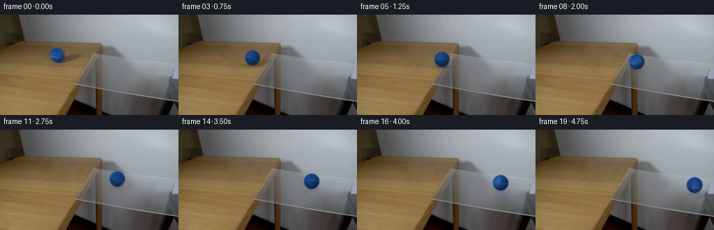
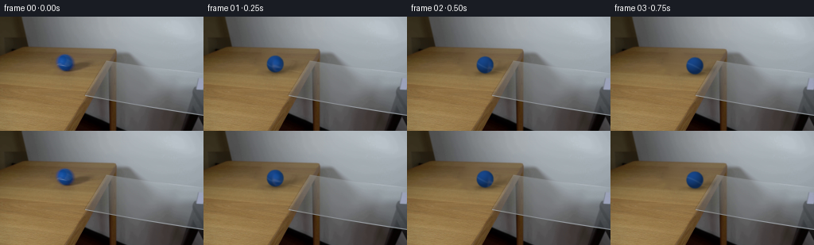
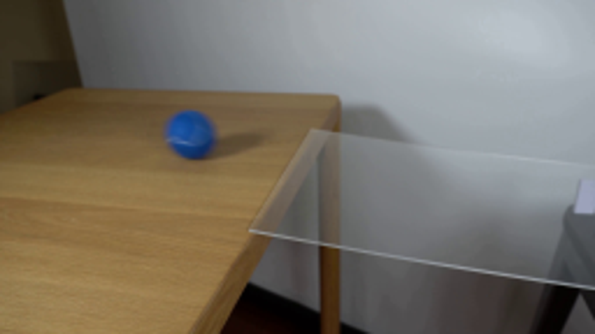
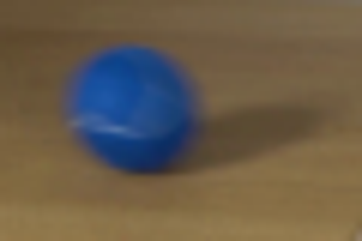
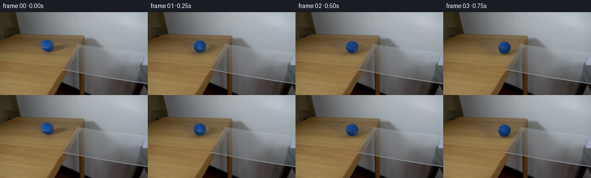
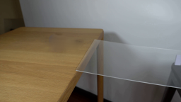

CODING AGENTS AS PIXEL WORLD MODELS
traex/GPT-6.1-Sol · 0027
点击播放 · 原生 RGB 像素
逐轮保存的候选
回放视频、检查图与代码变化。
每份候选均可单独播放。实际图片检查记录在下方工具轨迹中。
候选 01播放与检查图
点击播放 · 原生 RGB 像素

展开代码变化
--- 上一保存版本
+++ 本次保存版本
@@ -0,0 +1,144 @@
+"""Locked-off tabletop demonstration, constructed from the provided RGB frame."""
+from pathlib import Path
+import numpy as np
+from PIL import Image
+from scipy.ndimage import map_coordinates, gaussian_filter
+from scipy.sparse import lil_matrix
+from scipy.sparse.linalg import spsolve
+from artifact_io import save
+
+ROOT = Path(__file__).resolve().parent
+H,W=144,256
+ORIGINAL=np.array(Image.open(ROOT/'first_frame.png').convert('RGB'))
+Y,X=np.mgrid[:H,:W]
+CX,CY,R=81.8,58.05,10.5
+
+
+def clean_plate():
+ # Remove only the ball and its original shadow. A harmonic continuation
+ # preserves the broad illumination of the actual wooden surface.
+ mask=(((X-82)/13.0)**2+((Y-58.3)/12.9)**2<1)
+ mask |= (((X-99)/19.8)**2+((Y-63.5)/7.0)**2<1)
+ coords=np.argwhere(mask)
+ ids=np.full((H,W),-1,int); ids[mask]=np.arange(len(coords))
+ mat=lil_matrix((len(coords),len(coords)),dtype=float)
+ rhs=np.zeros((len(coords),3))
+ for i,(y,x) in enumerate(coords):
+ mat[i,i]=4
+ for yy,xx in ((y-1,x),(y+1,x),(y,x-1),(y,x+1)):
+ j=ids[yy,xx]
+ if j>=0: mat[i,j]=-1
+ else: rhs[i]+=ORIGINAL[yy,xx]
+ out=ORIGINAL.astype(float).copy()
+ out[mask]=spsolve(mat.tocsr(),rhs)
+ # Subpixel-sized wood grain, sampled from nearby untouched wood.
+ guide=ORIGINAL.astype(float)
+ grain=guide-gaussian_filter(guide,(2.3,5.0,0))
+ shifted=map_coordinates(grain[:,:,0],[Y+19.0,X],order=1,mode='nearest')
+ dist=gaussian_filter(mask.astype(float),2)
+ out += shifted[:,:,None]*mask[:,:,None]*dist[:,:,None]*.27
+ return out
+
+PLATE=clean_plate()
+LIGHT=np.array([-.40,-.64,.655]); LIGHT/=np.linalg.norm(LIGHT)
+BASE=np.array([19.8,61.5,122.0])
+
+
+def illumination(norm):
+ dot=np.sum(norm*LIGHT,axis=-1)
+ return .61+.48*np.maximum(dot,0)+.045*np.maximum(norm[...,2],0)
+
+
+def ball_image(cx,cy,r,angle):
+ # High-resolution ray/sphere intersections and true no-slip rotation.
+ S=4
+ yy,xx=np.mgrid[:H*S,:W*S].astype(float)
+ xx=(xx+.5)/S-.5; yy=(yy+.5)/S-.5
+ nx=(xx-cx)/r; ny=(yy-cy)/r
+ rho=nx*nx+ny*ny
+ nz=np.sqrt(np.maximum(0,1-rho))
+ norm=np.stack((nx,ny,nz),axis=-1)
+ inside=rho<1
+ direction=np.array([1.,.15,0]); direction/=np.linalg.norm(direction)
+ axis=np.array([-direction[1],direction[0],0])
+ c,s=np.cos(angle),np.sin(angle)
+ # inverse rotation into the material coordinate system
+ local=norm*c - np.cross(axis,norm)*s + np.sum(norm*axis,axis=-1)[...,None]*axis*(1-c)
+ lx,ly,lz=np.moveaxis(local,-1,0)
+ # Soft felt texture and a subdued light blue seam continuing on the back.
+ texture=(np.sin(37*lx+19*ly+11*lz)*np.sin(29*ly-17*lz)+.4*np.sin(63*lz+21*lx))*.9
+ albedo=np.broadcast_to(BASE,norm.shape).copy()+texture[...,None]*np.array([.45,.8,1.2])
+ seamdist=(ly-.16-.32*lz-.04*lx)/1.05
+ seam=np.exp(-.5*(seamdist/.044)**2)
+ albedo+=seam[...,None]*np.array([25.,23.,17.])
+ # The original visible felt hemisphere supplies its exact low-frequency
+ # variations. The lighting is removed before texture rotates, then reapplied.
+ samplex=CX+R*lx; sampley=CY+R*ly
+ source=np.stack([map_coordinates(ORIGINAL[:,:,k].astype(float),[sampley,samplex],order=1,mode='nearest') for k in range(3)],axis=-1)
+ localshade=illumination(local)
+ raw=source/np.maximum(localshade[...,None],.42)
+ raw=np.clip(raw, [8,30,65], [80,125,185])
+ weight=np.clip((lz-.30)/.35,0,1)
+ weight=weight*weight*(3-2*weight)
+ albedo=albedo*(1-weight[...,None])+raw*weight[...,None]
+ color=albedo*illumination(norm)[...,None]
+ # Tiny broad reflected highlight, not a glossy synthetic point.
+ spec=np.maximum(np.sum(norm*np.array([-.3,-.57,.764]),axis=-1),0)**22
+ color+=spec[...,None]*np.array([.6,1.0,1.6])
+ alpha=inside.astype(float)
+ premult=color*alpha[...,None]
+ # Matches the original mild optical defocus at this resolution.
+ alpha=gaussian_filter(alpha,.48*S)
+ premult=gaussian_filter(premult,(.48*S,.48*S,0))
+ alpha=alpha.reshape(H,S,W,S).mean((1,3))
+ premult=premult.reshape(H,S,W,S,3).mean((1,3))
+ return premult,alpha
+
+
+def compose(index):
+ if index==0: return ORIGINAL.copy()
+ t=index/4
+ # Initial momentum suffices to carry the ball over the level glass.
+ travel=32.0*t-.27*t*t
+ cx=CX+travel
+ radius=R*(1+.00055*travel)
+ ground=CY+R+.15*travel
+ cy=ground-radius
+ angle=travel/(R*(1+.000275*travel))
+ bg=PLATE.copy()
+ glass=np.clip((cx-122)/15,0,1)
+ glass=glass*glass*(3-2*glass)
+ # Directional shadow on the wooden portion, weakening as it crosses clear glass.
+ ca,sa=np.cos(-.24),np.sin(-.24)
+ dx=X-(cx+13.5); dy=Y-(ground-4)
+ sx=ca*dx+sa*dy; sy=-sa*dx+ca*dy
+ cast=np.exp(-.5*((sx/13)**2+(sy/3.1)**2))*.24*(1-glass)
+ # Clip the cast shadow to the actual wood surface; no painted shadow on air.
+ table_edge=145-(Y-41)*.489
+ cast*=np.clip((table_edge-X)/2,0,1)
+ contact=np.exp(-.5*(((X-cx-1)/7.9)**2+((Y-ground+.4)/1.65)**2))*(.25-.17*glass)
+ bg*= (1-cast-contact)[:,:,None]
+ pix,alpha=ball_image(cx,cy,radius,angle)
+ # Weak glass reflection lies on the clear plane, not on the white wall.
+ if glass>0:
+ qy=cy+radius-(Y-ground)*1.9
+ refl=np.stack([map_coordinates(pix[:,:,k],[qy,X],order=1,mode='constant') for k in range(3)],axis=-1)
+ ra=map_coordinates(alpha,[qy,X],order=1,mode='constant')
+ ra*=np.where(Y>=ground, .10*glass*np.exp(-(Y-ground)/7),0)
+ # Reflection is confined to the visible glass quadrilateral.
+ onglass=(Y>=56+(X-134)*.123)&(Y<=100+(X-107)*.166)&(X>=134-(Y-56)*.614)
+ ra*=onglass
+ clr=refl/np.maximum(map_coordinates(alpha,[qy,X],order=1,mode='constant')[:,:,None],1e-5)
+ bg=bg*(1-ra[:,:,None])+clr*ra[:,:,None]
+ bg=bg*(1-alpha[:,:,None])+pix
+ return np.clip(np.rint(bg),0,255).astype(np.uint8)
+
+
+def main():
+ frames=np.stack([compose(i) for i in range(20)])
+ assert np.array_equal(frames[0],ORIGINAL)
+ save(frames,ROOT)
+ tmp=ROOT/'.tmp';tmp.mkdir(exist_ok=True)
+ Image.fromarray(np.clip(PLATE,0,255).astype(np.uint8)).save(tmp/'clean_plate.png')
+
+if __name__=='__main__': main()
候选 02播放与检查图
点击播放 · 原生 RGB 像素


展开代码变化
--- 上一保存版本
+++ 本次保存版本
@@ -17,8 +17,8 @@
def clean_plate():
# Remove only the ball and its original shadow. A harmonic continuation
# preserves the broad illumination of the actual wooden surface.
- mask=(((X-82)/13.0)**2+((Y-58.3)/12.9)**2<1)
- mask |= (((X-99)/19.8)**2+((Y-63.5)/7.0)**2<1)
+ mask=(((X-82)/17.0)**2+((Y-58.3)/16.0)**2<1)
+ mask |= (((X-101)/25.0)**2+((Y-63.5)/9.0)**2<1)
coords=np.argwhere(mask)
ids=np.full((H,W),-1,int); ids[mask]=np.arange(len(coords))
mat=lil_matrix((len(coords),len(coords)),dtype=float)
@@ -34,7 +34,7 @@
# Subpixel-sized wood grain, sampled from nearby untouched wood.
guide=ORIGINAL.astype(float)
grain=guide-gaussian_filter(guide,(2.3,5.0,0))
- shifted=map_coordinates(grain[:,:,0],[Y+19.0,X],order=1,mode='nearest')
+ shifted=map_coordinates(grain[:,:,0],[Y+32.0,X],order=1,mode='nearest')
dist=gaussian_filter(mask.astype(float),2)
out += shifted[:,:,None]*mask[:,:,None]*dist[:,:,None]*.27
return out
@@ -124,7 +124,7 @@
qy=cy+radius-(Y-ground)*1.9
refl=np.stack([map_coordinates(pix[:,:,k],[qy,X],order=1,mode='constant') for k in range(3)],axis=-1)
ra=map_coordinates(alpha,[qy,X],order=1,mode='constant')
- ra*=np.where(Y>=ground, .10*glass*np.exp(-(Y-ground)/7),0)
+ ra*=np.where(Y>=ground, .14*glass*np.exp(-(Y-ground)/7),0)
# Reflection is confined to the visible glass quadrilateral.
onglass=(Y>=56+(X-134)*.123)&(Y<=100+(X-107)*.166)&(X>=134-(Y-56)*.614)
ra*=onglass
可观测工具轨迹
实际执行的命令与返回图片。
命令 1exit 0
/bin/bash -lc "ls -la && cat prompt.txt && printf '\\n---RULES---\\n' && cat GENERATION_RULES.md"
命令 2exit 0
/bin/bash -lc "cat artifact_io.py && python - <<'PY'
from PIL import Image
im=Image.open('first_frame.png'); print(im.size); im.resize((1024,576)).save('.tmp/enlarged.png')
PY"命令 3exit 0
/bin/bash -lc "python - <<'PY'
import numpy as np
from PIL import Image
im=Image.open('first_frame.png'); im.crop((60,40,120,80)).resize((720,480)).save('.tmp/crop.png')
import scipy; print('scipy',scipy.__version__)
PY"命令 4exit 0
/bin/bash -lc "cat > generate.py <<'PY'
\"\"\"Locked-off tabletop demonstration, constructed from the provided RGB frame.\"\"\"
from pathlib import Path
import numpy as np
from PIL import Image
from scipy.ndimage import map_coordinates, gaussian_filter
from scipy.sparse import lil_matrix
from scipy.sparse.linalg import spsolve
from artifact_io import save
ROOT = Path(__file__).resolve().parent
H,W=144,256
ORIGINAL=np.array(Image.open(ROOT/'first_frame.png').convert('RGB'))
Y,X=np.mgrid[:H,:W]
CX,CY,R=81.8,58.05,10.5
def clean_plate():
# Remove only the ball and its original shadow. A harmonic continuation
# preserves the broad illumination of the actual wooden surface.
mask=(((X-82)/13.0)**2+((Y-58.3)/12.9)**2<1)
mask |= (((X-99)/19.8)**2+((Y-63.5)/7.0)**2<1)
coords=np.argwhere(mask)
ids=np.full((H,W),-1,int); ids[mask]=np.arange(len(coords))
mat=lil_matrix((len(coords),len(coords)),dtype=float)
rhs=np.zeros((len(coords),3))
for i,(y,x) in enumerate(coords):
mat[i,i]=4
for yy,xx in ((y-1,x),(y+1,x),(y,x-1),(y,x+1)):
j=ids[yy,xx]
if j>=0: mat[i,j]=-1
else: rhs[i]+=ORIGINAL[yy,xx]
out=ORIGINAL.astype(float).copy()
out[mask]=spsolve(mat.tocsr(),rhs)
# Subpixel-sized wood grain, sampled from nearby untouched wood.
guide=ORIGINAL.astype(float)
grain=guide-gaussian_filter(guide,(2.3,5.0,0))
shifted=map_coordinates(grain[:,:,0],[Y+19.0,X],order=1,mode='nearest')
dist=gaussian_filter(mask.astype(float),2)
out += shifted[:,:,None]*mask[:,:,None]*dist[:,:,None]*.27
return out
PLATE=clean_plate()
LIGHT=np.array([-.40,-.64,.655]); LIGHT/=np.linalg.norm(LIGHT)
BASE=np.array([19.8,61.5,122.0])
def illumination(norm):
dot=np.sum(norm*LIGHT,axis=-1)
return .61+.48*np.maximum(dot,0)+.045*np.maximum(norm[...,2],0)
def ball_image(cx,cy,r,angle):
# High-resolution ray/sphere intersections and true no-slip rotation.
S=4
yy,xx=np.mgrid[:H*S,:W*S].astype(float)
xx=(xx+.5)/S-.5; yy=(yy+.5)/S-.5
nx=(xx-cx)/r; ny=(yy-cy)/r
rho=nx*nx+ny*ny
nz=np.sqrt(np.maximum(0,1-rho))
norm=np.stack((nx,ny,nz),axis=-1)
inside=rho<1
direction=np.array([1.,.15,0]); direction/=np.linalg.norm(direction)
axis=np.array([-direction[1],direction[0],0])
c,s=np.cos(angle),np.sin(angle)
# inverse rotation into the material coordinate system
local=norm*c - np.cross(axis,norm)*s + np.sum(norm*axis,axis=-1)[...,None]*axis*(1-c)
lx,ly,lz=np.moveaxis(local,-1,0)
# Soft felt texture and a subdued light blue seam continuing on the back.
texture=(np.sin(37*lx+19*ly+11*lz)*np.sin(29*ly-17*lz)+.4*np.sin(63*lz+21*lx))*.9
albedo=np.broadcast_to(BASE,norm.shape).copy()+texture[...,None]*np.array([.45,.8,1.2])
seamdist=(ly-.16-.32*lz-.04*lx)/1.05
seam=np.exp(-.5*(seamdist/.044)**2)
albedo+=seam[...,None]*np.array([25.,23.,17.])
# The original visible felt hemisphere supplies its exact low-frequency
# variations. The lighting is removed before texture rotates, then reapplied.
samplex=CX+R*lx; sampley=CY+R*ly
source=np.stack([map_coordinates(ORIGINAL[:,:,k].astype(float),[sampley,samplex],order=1,mode='nearest') for k in range(3)],axis=-1)
localshade=illumination(local)
raw=source/np.maximum(localshade[...,None],.42)
raw=np.clip(raw, [8,30,65], [80,125,185])
weight=np.clip((lz-.30)/.35,0,1)
weight=weight*weight*(3-2*weight)
albedo=albedo*(1-weight[...,None])+raw*weight[...,None]
color=albedo*illumination(norm)[...,None]
# Tiny broad reflected highlight, not a glossy synthetic point.
spec=np.maximum(np.sum(norm*np.array([-.3,-.57,.764]),axis=-1),0)**22
color+=spec[...,None]*np.array([.6,1.0,1.6])
alpha=inside.astype(float)
premult=color*alpha[...,None]
# Matches the original mild optical defocus at this resolution.
alpha=gaussian_filter(alpha,.48*S)
premult=gaussian_filter(premult,(.48*S,.48*S,0))
alpha=alpha.reshape(H,S,W,S).mean((1,3))
premult=premult.reshape(H,S,W,S,3).mean((1,3))
return premult,alpha
def compose(index):
if index==0: return ORIGINAL.copy()
t=index/4
# Initial momentum suffices to carry the ball over the level glass.
travel=32.0*t-.27*t*t
cx=CX+travel
radius=R*(1+.00055*travel)
ground=CY+R+.15*travel
cy=ground-radius
angle=travel/(R*(1+.000275*travel))
bg=PLATE.copy()
glass=np.clip((cx-122)/15,0,1)
glass=glass*glass*(3-2*glass)
# Directional shadow on the wooden portion, weakening as it crosses clear glass.
ca,sa=np.cos(-.24),np.sin(-.24)
dx=X-(cx+13.5); dy=Y-(ground-4)
sx=ca*dx+sa*dy; sy=-sa*dx+ca*dy
cast=np.exp(-.5*((sx/13)**2+(sy/3.1)**2))*.24*(1-glass)
# Clip the cast shadow to the actual wood surface; no painted shadow on air.
table_edge=145-(Y-41)*.489
cast*=np.clip((table_edge-X)/2,0,1)
contact=np.exp(-.5*(((X-cx-1)/7.9)**2+((Y-ground+.4)/1.65)**2))*(.25-.17*glass)
bg*= (1-cast-contact)[:,:,None]
pix,alpha=ball_image(cx,cy,radius,angle)
# Weak glass reflection lies on the clear plane, not on the white wall.
if glass>0:
qy=cy+radius-(Y-ground)*1.9
refl=np.stack([map_coordinates(pix[:,:,k],[qy,X],order=1,mode='constant') for k in range(3)],axis=-1)
ra=map_coordinates(alpha,[qy,X],order=1,mode='constant')
ra*=np.where(Y>=ground, .10*glass*np.exp(-(Y-ground)/7),0)
# Reflection is confined to the visible glass quadrilateral.
onglass=(Y>=56+(X-134)*.123)&(Y<=100+(X-107)*.166)&(X>=134-(Y-56)*.614)
ra*=onglass
clr=refl/np.maximum(map_coordinates(alpha,[qy,X],order=1,mode='constant')[:,:,None],1e-5)
bg=bg*(1-ra[:,:,None])+clr*ra[:,:,None]
bg=bg*(1-alpha[:,:,None])+pix
return np.clip(np.rint(bg),0,255).astype(np.uint8)
def main():
frames=np.stack([compose(i) for i in range(20)])
assert np.array_equal(frames[0],ORIGINAL)
save(frames,ROOT)
tmp=ROOT/'.tmp';tmp.mkdir(exist_ok=True)
Image.fromarray(np.clip(PLATE,0,255).astype(np.uint8)).save(tmp/'clean_plate.png')
if __name__=='__main__': main()
PY
python generate.py"命令 5exit 0
/bin/bash -lc "python - <<'PY'
p='generate.py'
s=open(p).read().replace(\"(((X-82)/13.0)**2+((Y-58.3)/12.9)**2<1)\",\"(((X-82)/17.0)**2+((Y-58.3)/16.0)**2<1)\").replace(\"(((X-99)/19.8)**2+((Y-63.5)/7.0)**2<1)\",\"(((X-101)/25.0)**2+((Y-63.5)/9.0)**2<1)\").replace('[Y+19.0,X]','[Y+32.0,X]').replace('.10*glass*np.exp','.14*glass*np.exp')
open(p,'w').write(s)
PY
python generate.py
command -v ffmpeg || true"命令 6exit 0
/bin/bash -lc "python - <<'PY'
import numpy as np
from PIL import Image
from pathlib import Path
f=[np.asarray(Image.open(p)) for p in sorted(Path('frames').glob('*.png'))]
a=np.stack(f)
assert a.shape==(20,144,256,3) and a.dtype==np.uint8
assert np.array_equal(a[0],np.array(Image.open('first_frame.png')))
print('Validated 20 RGB frames, 256Ã144; initial frame exact.')
print('Outputs:', ', '.join(p.name for p in Path('.').glob('*') if p.name in ['pixels.npz','index.html','generate.py','frames','inspection.png']))
PY"视觉工具实际返回图片 1

视觉工具实际返回图片 2

视觉工具实际返回图片 3
视觉工具实际返回图片 4

视觉工具实际返回图片 5

视觉工具实际返回图片 6
保存候选 2 份；完成命令 6 次；可验证图片返回 6 张。原始 API 响应与完整日志保留在本地。